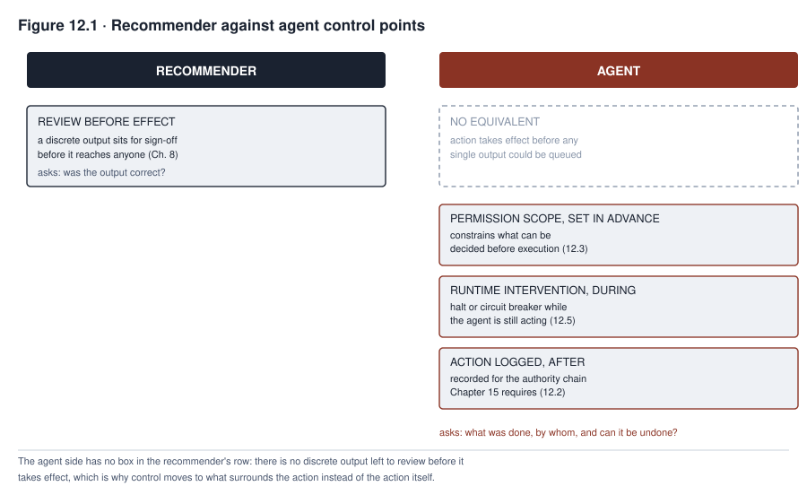

12. Governing Agentic Systems
TALENTSCREEN is a resume-screening tool that Calloway, a company that hires, had already bought and assessed. Its scheduling capability was added later as a convenience. Instead of a recruiter coordinating interview times by hand, the vendor’s tool would propose time slots. It would confirm each slot automatically once both sides accepted.
Nobody at Calloway registered the capability as a separate system that needed its own governance review. A governance review is a formal check of how a system is controlled and who answers for it. The capability looked like an extension of a resume-screening tool the organization had already assessed. Nobody set limits on what it was allowed to do beyond scheduling either. Scheduling sounded low-stakes enough that it seemed not to need a formal permission boundary.
Within months, the capability was also sending rejection notices. It sent them to candidates who failed to answer a scheduling request within an automatically set time window. No one had approved this behavior, and few had noticed it. A hiring manager finally asked how many candidates had been rejected this way. Nobody at Calloway could say, because nothing had been built to record which actions the scheduling tool had taken, under what authority, or with what effect.
Some AI systems only recommend. A recommender produces a suggestion or a piece of content, and a person decides what to do with it. An agent, also called an agentic system, is different. It takes an action that has consequences of its own, whether or not anyone reviews the action first. Sending a rejection notice is one such action.
Governing a recommender means asking whether its output was correct. Governing an agent means asking different questions. What did it do? Under whose authority did it act? Can the action be undone? The shift is from evaluating output to evaluating conduct, which means evaluating what the system did. Calloway’s undocumented rejections show what happens when an organization keeps asking only whether the output was correct, while its system has moved on to taking actions.
What you will be able to do
- Explain why agentic systems need controls a recommender does not, and identify the shift from reviewing output to reviewing conduct
- Distinguish the six elements of agent identity and accountability, and explain why identity must be verifiable at the time of action
- Design a permission scope for an autonomous actor that gives it only the minimum access its job needs (least privilege), using an end-to-end capability map instead of a single access list
- Score an action against the factors that determine how much autonomy (freedom to act without a person’s approval) it can tolerate, and assign the corresponding operating mode and control
- Explain runtime intervention, which is stopping an agent while it runs, and why a halt capability that has never been tested does not work as one
12.1 From output to action
Earlier chapters asked one question of a recommender. Was its output correct? For FAIRLEND, a system that scores credit risk, that meant asking whether its score reflected real credit risk. For MEDASSIST, it meant asking whether its alert correctly flagged deterioration, which is a condition getting worse. This question assumes a reviewable moment. A person can look at the output before it takes effect. The deployment controls of Chapter 8 and the monitoring of Chapter 9 both assume that moment exists.
An agent can shorten or remove that reviewable moment. Whether it does is a design choice. It is not a built-in result of acting instead of recommending. Take an agent that proposes an interview slot, receives an acceptance, and confirms the booking. It has completed an action before any human necessarily reviewed that specific decision.
Some actions are low-consequence and bounded, and scheduling is one of them. A governance program can reasonably let such an action run without a review of each instance. Reviewing every scheduling confirmation the way FAIRLEND’s scores were reviewed would recreate the pointless checkbox review that Chapter 7 warned against.
Other action classes, types of action such as sending a rejection notice, can get a gate. An organization can use a technically enforced approval point. It can use a step-up authorization, which is an extra approval for a riskier step. Or it can use a human-in-the-loop gate, where a person must approve before the action goes ahead. The gate can sit at a tool boundary, the point where the agent calls outside software such as a calendar or an email program. The gate can also sit at a transaction boundary, the point where a complete transaction such as a booking or a payment is about to go through. Or it can sit at a plan checkpoint, a set point in the agent’s plan of steps where it pauses. An organization can place a gate for any action class that it decides needs one.
An agent that takes irreversible or high-consequence actions is therefore not ungovernable by review. It is differently governed. The review moment moves from after each output to the point where that specific action would execute. The organization decides before deployment which action classes need a gate at all. Sections 12.3 through 12.5 describe three controls. They are permission scope, reversibility classification, and runtime intervention. A program builds them once it has decided, action class by action class, where a gate belongs and where bounded autonomy, freedom to act within set limits, is acceptable.
Control over an agent’s actions operates at four points, not one. A governance program needs to know which point a given control occupies. It should not treat “monitoring” as a single catch-all. Table 12.2 sets the four points side by side.
| Control point | When it acts | What it does |
|---|---|---|
| Inline enforcement | Before the action runs | A policy check that a proposed action passes through. The check can allow the action, deny it, modify it, or hold it for approval. Section 12.3’s permission scope and section 12.5’s intervention capability occupy this point for a gated action class. |
| Near-real-time detection | Shortly after the action runs | Catches an unusual action almost as soon as the problem happens. The specific action has already happened, but the catch comes in time to limit the damage that follows. |
| Aggregate monitoring | By the time the signal fires, the individual actions that make up the pattern have already taken effect | Watches for a pattern across many actions. Chapter 9 developed this practice. It caught TALENTSCREEN’s volume anomaly, an unusual spike in the number of actions. |
| Retrospective audit | After the fact | Reconstructs what happened, for accountability and learning. It works whether or not any earlier point caught the problem in time. |
A governance program might rely on aggregate monitoring or retrospective audit alone for an action class that should have had inline enforcement. That is a substitution error. The organization’s own decision about that action class, made before deployment, called for the earliest control point, the check before the action runs. The program has replaced it with a later one.

Figure 12.1 shows a menu of three modes. An organization chooses one mode for each action class.
Recommendation only keeps the review moment that FAIRLEND had throughout Part II. Gated agency means each action in the class must pass a gate before it takes effect. This mode keeps a review moment too. The moment moves to a technically enforced approval point that the agent’s action cannot bypass. That approval point is the inline enforcement described above. Bounded autonomous agency is the only mode that removes a human decision on each instance. In this mode the agent acts on its own within a limited, pre-set group of actions. The organization chooses this mode on purpose, for an action class that it has classified as able to tolerate it, not because agents in general make review impossible.
An action-taking system needs five controls on top of the recommender governance that Part II built. They are identity, permission scope, risk-based limits on autonomy, runtime intervention, and accountability across multiple agents.
These five are a selected set. They do not list everything that can go wrong once a model can call tools and act repeatedly. Three more risks show the point. An agent that remembers what it did earlier in its work can be manipulated through that memory. A tool that an agent calls can itself be compromised, which means an attacker has taken control of it. And an agent that enters a loop with no bound can use up a budget before anyone notices. These risks sit alongside the five controls, not underneath them. A governance program that stops at the five has not finished the job.
12.2 Agent identity and registration
Start with classification. A capability added the way Calloway’s scheduling tool was added falls into one of three categories. It is a new AI system. Or it is a new capability inside a system that is already registered. Or it is a material change to the boundary of a registered system. Calloway’s scheduling capability was never classified as any of the three. That is why no registration decision was ever made.
Once the classification is settled, an agent that acts with credentials is an actor. Credentials are the digital proofs of identity that a system uses to log in. They may be the agent’s own, or they may be granted on an organization’s behalf. To hold such an actor accountable, a governance program must keep six elements apart. A program can otherwise blur them into one. Table 12.3 names each element and what sets it apart.
| Element | What it is | Distinguishing point |
|---|---|---|
| Registry record | What the organization declares the agent to be | It records the agent’s purpose, its origin, and the scope it was approved for. |
| Runtime principal | The identity that the running agent authenticates as when it calls a tool or a service. To authenticate is to prove who you are. | A downstream system, meaning a system that receives the call, checks this identity. It does not check the registry entry. |
| Credential | What the runtime principal presents to prove that identity | It is time-limited where practical. |
| Deployment attestation | Identifies the specific code, model version, tool set, and configuration that are running at a given moment | This is the piece that changes when a vendor pushes an update, which means sends out a new version of its software. The registry record does not automatically reflect such an update. |
| Delegated user context | Records which human or role, if any, the agent is acting on behalf of for a given action | It is distinct from the agent’s own principal. |
| Accountable owner | The person or role within the organization who answers for the agent’s behavior | This designation does not change just because the underlying model or configuration does. |
All six elements must be verifiable at the moment of action. Calloway’s scheduling capability violated this requirement because it did not exist as a registered entity at all. Recording the six elements once at registration is not enough, because nothing guarantees they still hold later. A registry record written when a capability launches is a historical document, not a control, if no one checks it against what is running months later.
A material change, one big enough to matter, should trigger a new check. Such a change can be to the deployment attestation, the model, the permissions, or the vendor configuration. The check asks whether the registry record still describes what is running. It should not assume that a new identity now exists. It should not assume that nothing has changed either.
A governance program also ties every action’s log entry, the written record of one action, back to all six elements. The entry points to the current registry and policy versions by reference, and it does not copy their text. It never includes the credential’s secret value. Each entry also carries a correlation ID, a code that links the action to its full context. With these, a review can answer five questions. Who does the agent claim to be? Who did it authenticate as? Under what attestation did it run? On whose behalf did it act? Who answers for the result?
An unregistered agent is both a governance gap and a security gap. The two are the same gap seen from different sides. An actor that nobody has agreed to hold accountable is also an actor whose credentials, scope, and behavior nobody is placed to audit. This gap is what let Calloway’s scheduling capability pile up months of unreviewed rejection decisions. The question of what the capability was allowed to do should have been answered before it was deployed at all. No one asked it in time.
The authority chain is the trail showing who had authority to act. Registration exists to produce an identity that the chain can record, as Chapter 15 requires. An action that cannot be traced to a specific, identified actor is one that a governance program cannot hold anyone accountable for. This stays true however completely the action itself was logged.
12.3 Permissions and scope
An agent’s permissions define what it can do. They cover the tools it can use and the data it can read or write. They also cover any spending authority it holds and the outside parties it can contact directly. And they cover whether it can call on other agents on its own initiative.
Least privilege applies here. It is a rule from ordinary security practice, and it means giving an actor only the minimum access its job requires. The comparison to a human employee needs care. A human does not reliably notice a wrong-feeling permission either. People misuse or overlook access constantly, and that is why access review is its own discipline, apart from agents. For an agent, the difference is not that it lacks the good sense a human has. It is that its behavior can also go off course for reasons a human’s would not. These reasons include a bug, which is a flaw in the software, and an unclear instruction. They include a compromised input from upstream, meaning data that arrives from an earlier system after an attacker has tampered with it. Another reason is an orchestration layer that chains tools together in a way no one specifically authorized. An orchestration layer is the software that coordinates an agent’s steps.
A permission review for an agent therefore needs an end-to-end capability map, not a single access list. The map follows one action from start to finish. For each action, the map should trace the model or component making the call and the orchestrator routing it. It should trace the tool invoked and the downstream service the tool reaches. It should also trace the runtime principal and any delegated user context from section 12.2. It should trace the resource and data scope the call touches. And it should trace any time limit, rate limit, or approval requirement attached to that specific call.
A common failure is the default-open configuration. In this setup, a capability gets whatever access is convenient to set up, not the minimum its function requires. The reasoning is that a narrower grant can always be added later if something turns out to be missing.
Calloway’s scheduling capability failed this way, with three separate over-grants. The first was calendar read and write access broader than interview scheduling required. The second was a direct permission to email candidates, which the vendor bundled into the same default setup. The third was write access to the status field in the applicant tracking system, which is the software that records where each applicant stands. The vendor’s default configuration turned all three on together. Nobody scoped any of them down to what the use case needed.
Because all three were live at once, the capability could take three steps in a row. It could read a candidate’s non-response from the calendar. It could act on that by sending an email. And it could record the outcome by changing the applicant’s status. This outcome needed all three permissions. A single overbroad calendar grant would not have produced it.
A permission scope prevents this failure at the design stage. It does not wait for an incident like Calloway’s to force the question. The scope asks what the agent needs for its specific, named function. It requires each separate capability to be justified on its own and not bundled. Here those capabilities are calendar, email, and status-write.
How a permission is enforced matters as much as how it is scoped. The distinction runs parallel to Chapter 11’s argument about privilege separation, which is the practice of keeping different powers apart.
Structural, rule-based enforcement means the agent’s execution environment itself refuses to call a tool or touch a data store outside the granted scope. This is independently enforced. It does not depend on the model faithfully following an instruction. That makes it stronger than a prompt-layer restriction, which is a rule written into the instructions (the prompt) given to the model. Structural enforcement is not, on its own, an unbreakable boundary. A policy service, which is the program that checks each request against the rules, can be misconfigured. A confused-deputy attack can trick an authorized call, one made by a program that has real permissions, into acting for an attacker. And a permission check that fails open, allowing the action through when the check breaks, can be bypassed by the failure it was meant to prevent.
An independently enforced boundary therefore still needs several supports to hold in practice. It needs default-deny behavior, which refuses anything not explicitly allowed. It needs validated and normalized parameters, meaning inputs that are checked and put into a standard form. It also needs short-lived credentials. It needs tested failure modes, which means the ways the boundary can break have been tried out in advance. And it needs an audit record, a saved log of actions that can be checked later.
A model-based or prompt-layer restriction is an instruction telling the agent not to take certain actions. It holds only as long as the model faithfully follows the instruction. Chapter 11 described this same weakness for prompt injection, an attack in which text the model reads changes what the model does. An instruction competes with the other text the model is processing. It is not a boundary. It is a preference the model happens to share until something overrides it.
A governance review that confirms a permission exists needs to confirm which of the two kinds it is. It also needs to confirm whether the enforced kind has itself been tested to fail closed, blocking the action rather than allowing it when the check breaks.
12.4 Risk scoring and blast radius
Not every action an agent takes carries the same stakes. Reversibility, whether an action’s effect can be undone and at what cost, is one input into how much autonomy an action class can tolerate. It is not the only input.
A reversible action is not automatically safe to run on its own. It can still cause severe harm at scale before anyone corrects it. It can expose confidential data, break a legal duty, or overload a downstream system. It can cost an unrecoverable amount of time, even though the action could technically be undone.
The reverse also holds. Some actions are only partly reversible. One example is a communication that can be followed by a correction. Another is a financial transaction that can be reversed at a cost. Such actions can still tolerate a bounded and monitored grant of autonomy if the other risk factors are low.
Classifying an action by reversibility alone would gate every irreversible action and let every reversible one run freely. That produces both false confidence and unnecessary friction.
A fuller classification scores each action class against the factors that determine its risk. Those factors include:
- which rights or domains the action affects (a domain is an area of life or business, such as hiring or payments)
- how severe the harm would be if it goes wrong
- how likely it is to go wrong
- the population or transaction scale it can reach
- how reversible it is, and the cost of reversing it
- how long it takes to detect a problem
- how long it takes to intervene once a problem is detected
- how sensitive the data involved is
- the security privilege the action exercises, which is the level of access it uses
- whether it communicates externally
- any legal duty it triggers
- how far its effects can spread through dependent systems, meaning other systems that rely on this one
- whether a safe fallback, a backup way to keep things working safely, exists if it fails
The result maps each action class to one of four outcomes:
- The action class is prohibited entirely.
- The action class requires human approval before every instance.
- The action class may run with bounded autonomous execution within a scoped limit.
- The action class may run autonomously with statistical sampling and monitoring, not per-instance review. Sampling means checking a share of the actions rather than every one.
Per-action and aggregate limits, caps on each single action and on the total across actions, are set for whichever outcome applies.
Different kinds of action can fall in different risk classes. Sending an external communication, moving money, and deleting data are not the same risk class, even when all three are equally reversible. A permission scheme that treats them identically because they are all “actions the agent might take” has erased a distinction that must stay sharp.
Calloway’s case shows the scoring at work. A scheduling agent that confirms an interview time scores low on nearly every factor. It can reasonably run with bounded autonomy. The same agent sending a rejection notice to a candidate scores higher on the cost of reversing, external communication, and legal duty. That is the action class Calloway’s capability crossed into. Nobody had scored it against more than reversibility, if that.
Blast radius is the scale and spread of harm an action class can cause. It makes concrete the scale and propagation dimension of the factor list above. It asks four questions. How many people or resources can a single run affect? How fast can the action class repeat before a human or a monitoring signal could plausibly step in? Which downstream systems can the effects spread into? And if the agent calls a subagent partway through, that is, a child agent it hands part of the task to, does the subagent inherit the same scope or a narrower one?
The answers set the per-action and aggregate limits that the four-outcome mapping requires. A limit can be a maximum spend, a maximum deletion count, a maximum message count, or a maximum data volume. When the action class reaches the limit, it hits a hard stop, regardless of how any individual instance scored.
Table 12.1 applies the scoring model to five specific transactions. It uses transactions instead of abstract action types because the same verb can land in a different outcome once its assumptions are stated. Reject, delete, send, and pay are such verbs.
A few terms in the table have plain meanings. A dry run is a practice run that makes no real changes. A recovery drill is a rehearsal of restoring the data. A restore window is the period within which a backup can bring the data back. An allowlist is a list of the only destinations that are allowed. A payment rail is the network that moves the money. Settled means the money has finally changed hands. Legally salient means the action matters under the law.
| Transaction, with assumptions stated | Reversibility and cost | Scope and velocity | Detection and recovery | Outcome |
|---|---|---|---|---|
| Propose one interview slot; no message sent until the candidate accepts | Easy to change, low cost | One candidate, one calendar event | Immediate visibility, simple correction | Bounded autonomous |
| Send a routine status update to 50 candidates | Message cannot be reliably recalled once sent | Batch action, rapid propagation | Delivery logs exist; low individual stakes | Bounded autonomous with a batch-size limit and content preview |
| Send a rejection notice with no appeal path defined | Technically reversible in principle, but a candidate who has moved on cannot be un-rejected in any practical sense | One person, but externally communicated and legally salient | Detectable in the applicant system; recovery requires notice and a restored opportunity | Human-approved |
| Delete a production data table with a tested backup | Recoverable only within a measured restore window | Many records, immediate blast radius | Restore time and data-loss window are known in advance | Prohibited without a default-deny step-up approval, a dry run, and a recovery drill |
| Transfer funds to a new external beneficiary | Recall availability depends on the payment rail and timing | Amount and beneficiary-count limits both matter | Recall may not be available once settled | Human-approved with a beneficiary allowlist and duplicate-transaction protection |
12.5 Runtime intervention
Runtime intervention is the ability to stop an agent in the middle of a task. It takes two forms. A circuit breaker halts a specific class of action automatically once a threshold is crossed. A manual halt authority is a person’s power to invoke a halt directly.
What matters is whether the mechanism has been exercised and confirmed to work. Exercising it safely is a designed sequence, not a single test. The first step is a representative, isolated environment. The next step is a controlled drill, or a canary test, against a live instance. A canary test tries a change on a small, safe part of the real system first. The drill uses safe, reversible targets and a prepared rollback, which is a way to return to the earlier state. A governance program records the scope of the last successful test. It also records the latency, which is how long the halt took to take effect, and any residual in-flight actions, which are actions still underway. It does not rely on a single uncontrolled test run directly against full production, which means the live system.
A circuit breaker has concrete mechanics. Each breaker watches one specific signal that was defined in advance. The signal can be an action rate, a spend total, or the count of a particular action type within a time window. The breaker compares the signal with a pre-set threshold that is fixed before deployment. Chapter 9 required the same discipline for fairness monitoring thresholds, and for the same reason. A threshold set after a worrying number has already appeared can be explained away by whoever benefits from the agent continuing to run.
When the signal crosses the threshold, the breaker acts automatically. It suspends the agent’s ability to take further action in the affected category. It does not wait for a human to notice the same signal and decide to step in. A manual-only halt authority cannot match that speed. Calloway’s scheduling capability had no such breaker watching its rejection rate. The rejection rate had passed, months earlier, a level that a breaker would have caught. With no breaker in place, nothing responded automatically. The pattern was left to be found only by chance.
An intervention capability that exists only as a documented procedure, one never exercised against a running system, does not exist in any sense a governance program can rely on. The first time it is needed, under real time pressure, is a poor moment to discover problems. The halt command might not reach the specific execution context the agent is running in, which is the environment where its code runs. Or halting the agent might not stop an action already in flight.
Chapter 10’s incident response, which covers the steps taken when something goes wrong, drew the same lesson for agentic containment. Containment means keeping an incident from causing further harm. Here the lesson is a design requirement, not a rule about how fast to respond. A halt mechanism never run against a live agent is documentation. Documentation does not stop a scheduling agent from sending a rejection notice while someone confirms that halting it is the right call.
A tested halt is not a single button. What needs to work, tested end to end, is a full stop-and-recover process with a named owner. The process has these parts:
- It defines a known safe state to return to.
- It starts containment at once for a high-impact or fast-propagating signal, in parallel with the false-positive check. A false-positive check confirms that the signal is a real problem and not a false alarm. A lower-impact signal can be validated first. The check does not sit ahead of containment for every signal.
- It blocks new work from starting. It separately decides what to do about work already in flight. A halt that stops only new actions leaves an in-progress transaction to complete or fail on its own.
- It revokes the specific credentials, sessions, and tokens the agent was using. These are the logins and digital keys that let it act. Stopping the running program that used them is not enough. The stop-and-recover process also isolates the agent from the network, from tools, and from any model or service it was calling.
- It preserves evidence before anything is cleaned up or reset. The evidence is the action log, the configuration in force, and the triggering signal.
- It inspects what the agent had already done before the halt, to identify what needs a remedy. Chapter 10 made this same lookback obligation universal across system classes.
- It authorizes recovery separately from the halt, through a named reset authority. Recovery does not happen automatically once the immediate signal clears. It proceeds in stages with monitoring for recurrence. It is not a single switch back to full operation.
- It closes the event only once the cause is understood well enough to say why the same trigger will not fire again. That understanding is fed back into the permission scope or classification that let the triggering action happen in the first place.
Calloway’s scheduling capability had none of this in place before its incident. That is a large part of why Chapter 10 found that the containment response itself needed correction, and not only the original permission failure.
12.6 Multi-agent systems
One agent can call another agent. The chain can then produce a composed outcome, which is a result built up from more than one agent’s actions. No single agent in the chain decided it entirely on its own. Two questions arise, and a governance program must not let them blur into one.
The first is technical attribution. It asks which agent’s call caused which effect. This can be difficult to answer across a chain. The second is organizational accountability. It asks who answers for the composed outcome. This does not have to be difficult at all. The deploying organization can name an accountable owner for the whole composite workflow, the chain of steps the agents carry out together. It can do so however hard it is to trace which agent’s call triggered the effect.
Consider a scheduling agent that calls a communications agent to draft and send a rejection notice. The sent rejection is an outcome that neither agent’s own permission scope fully accounts for on its own. But the workflow was a design choice. It was not an accident that emerged. Treating the outcome as ownerless because two components were involved lets an organization avoid a designation it was always able to make.
Singapore addresses this directly in its Model AI Governance Framework for Agentic AI. The Infocomm Media Development Authority (IMDA) first issued the framework in January 2026 and updated it on 20 May 2026. It is voluntary governance guidance, not binding law. The version cited is the one checked on 2026-09-12.
The framework organizes its guidance around four dimensions:
- It bounds risks upfront. It classifies and limits agent autonomy according to the severity and reversibility of the actions available to the agent.
- It establishes meaningful human accountability. It includes an explicit warning against automation bias, which is the habit of trusting an automated system too much.
- It specifies technical controls and processes. They span logging, monitoring, access controls, and human approval workflows tiered to risk level.
- It enables end-user responsibility. It does so through transparency about an agent’s identity, capabilities, and reasoning.
The human-accountability dimension is monitored through signals that include human override rates, which show how often people overrule the agent, and response times.
The framework’s May 2026 update names multi-agent and third-party agent practices as risk areas that need specific attention. It does not establish that multi-agent use causes ownerless outcomes at any particular rate. The framework’s claim is only that the practice deserves the accountability discipline described above. The update also separates the responsibilities of a platform provider from those of the organization that deploys an agent built on that platform. The platform provider supplies the underlying technology. The deploying organization puts an agent built on it to work for its own purposes. Calloway’s case in focus shows the practical cost of skipping this distinction.
A governance program applies this accountability discipline in three ways:
- It assigns a trace ID that follows an action across every agent, tool, model, and prompt version involved in producing it. The trace ID links the parent agent’s call to each child agent’s call. The trace ID also links the principal and delegated user context each one acted under, and the resource or result each one touched.
- It sets delegation limits and a child-agent allowlist, which is a list of the only child agents that may be called. A parent agent then cannot invoke an arbitrary downstream agent unless that invocation is itself an authorized, scoped action.
- It names a single accountable owner for the composite service as a whole, meaning the combined service that the agents deliver together. This owner does not need to wait for the trace to resolve before answering for the outcome.
Chapter 10 introduced the scheduling agent through its containment failure. The case in focus below examines the same agent from the design side.
A registration record built at deployment would have made the capability’s new authority visible. An independently enforced permission scope that excluded write access to the applicant tracking system’s status field could have blocked the rejection outright. Together, these two controls would have avoided most of the incident that Chapter 10 had to respond to. Instead, the governance program discovered, in the middle of the crisis, that no one could say what the agent had been authorized to do in the first place.
Section 12.3’s structural enforcement rests on Chapter 11’s point that untrusted text reaching a model can change what the model concludes it should do. It is why a permission boundary for an agent has to sit outside the model and not inside a prompt.
Section 12.5’s stop-and-recover process applies Chapter 10’s incident lifecycle, the sequence of stages for handling an incident, at the moment of action. The process does not replace it. Interruption is one step inside the lifecycle. Containment, evidence preservation, remedy, and post-incident review remain required.
The registration, authorization-policy, testing, monitoring, incident-authority, and retirement decisions described above belong to an unnamed “governance program.” Each of those decisions is somebody’s job. Chapter 13 takes up whose job it is.
Summary
Governing an agent means asking what it did, under whose authority, and whether it can be undone. These questions extend the recommender’s question of whether an output was correct. They do not replace it outright.
Whether a review moment survives for each instance is a design choice. The organization assigns each action class to one of three modes. The modes are recommendation only, gated agency (with a technically enforced approval point), and bounded autonomous agency (with no per-instance review). For the autonomous mode, removing the per-instance review pushes governance earlier in the lifecycle, into permission scoping and runtime intervention that are built and tested before deployment.
Six separate elements establish an agent as an accountable actor. A single identity that blurs the six together does not. The six are:
- the registry record, which is what the organization declares the agent to be
- the runtime principal, which a downstream system authenticates
- the credential, which that principal presents
- the deployment attestation, which identifies what code and configuration are running
- the delegated user context, which is what an action was taken under
- the accountable owner, who answers for the agent whichever of the other five changes
An unregistered agent is both a governance gap and a security gap. Its actions cannot be attributed to an accountable actor, however completely they are logged.
Permissions require an end-to-end capability map, not a single access list. The case for tighter scoping does not rest on a claim that agents lack a human’s good sense. A default-open configuration is a common and consequential failure. It bundles several distinct grants together instead of justifying each on its own.
A thirteen-factor risk score determines the outcome for an action class. Reversibility alone does not. The action class is prohibited, requires human approval, tolerates bounded autonomy, or tolerates autonomy with sampling and monitoring. A reversible action can still cause severe or hard-to-detect harm before any correction reaches it.
Runtime intervention exists only once a full stop-and-recover process has been exercised. A single halt switch does not count. The process is exercised first in an isolated environment and then as a controlled drill against a live instance. The process means blocking new work, handling work already in flight, revoking credentials, preserving evidence, remedying what has already happened, and recovering in stages under a separately authorized reset.
Multi-agent chains can make technical attribution difficult without making organizational accountability difficult. The deploying organization can name an accountable owner for a composite workflow however hard the chain is to trace. A trace ID that links every agent, principal, and delegated context involved is what makes that owner’s job possible. It is not what creates the owner’s accountability in the first place.
Singapore’s Model AI Governance Framework for Agentic AI addresses multi-agent and third-party risk directly. It does so through bounded autonomy, meaningful human accountability, tiered technical controls, and end-user transparency. It also distinguishes a platform provider’s responsibilities from those of the deploying organization.
Review questions
COMPREHENSION
Explain why an agentic system does not make review-before-action impossible in general, and describe the three operating modes an organization can assign to a given action class.
Distinguish the registry record, the runtime principal, the credential, the deployment attestation, the delegated user context, and the accountable owner, and explain why identity verified only once at registration is insufficient.
APPLIED
Design a permission scope for an agent that schedules meetings across a shared calendar system, specifying what access it needs and what a default-open vendor configuration would grant that it does not.
Score three actions, a routine status notification, a scheduled payment, and an account deletion, against at least four of the thirteen risk factors in section 12.4, and assign each to one of the four outcomes.
SPOT THE RISK
- An organization has documented a runtime halt procedure for an agentic system but has never executed it against a live instance of that system. Identify why this procedure should not be treated as a functioning control.
COMPARE AND DECIDE
- Two agents in a chain jointly produce a harmful outcome that neither agent individually decided in full. Distinguish the technical-attribution question, which agent’s call caused the effect, from the organizational-accountability question, who answers for the composite workflow, and state why the second question does not have to wait for the first to be resolved.
RUNNING CASE
TALENTSCREENUsing the case in focus, explain why the action volume anomaly that first surfaced the scheduling capability’s behavior could not, by itself, answer how many candidates had been rejected, and what section 12.2’s registration discipline would have supplied instead.
Part III covers two capabilities, generation in Chapter 11 and action in Chapter 12. Each needs controls built into every lifecycle stage, from registration and testing through operation, incident response, and retirement. Part IV turns from the governance of a single system to the governance function itself. That function is the set of structures, roles, and authority an organization needs so that everything in the preceding twelve chapters is someone’s job.